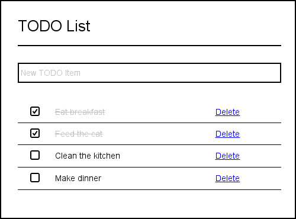

Your task is so write a simple TODO List application. TODO items can be added, removed and marked as done.

A new TODO item is entered in the text box. Pressing Enter adds it to the list.
Clicking Delete deletes the corresponding item.
Checking the checkbox causes the item to display differently indicating it has been done. Un-checking the checkbox returns the item's display back to normal.
The TODO list should work on both small and large displays and should adjust it's width according to the size of it's container.
Feel free to enhance your application with nicer styles or improved functionality